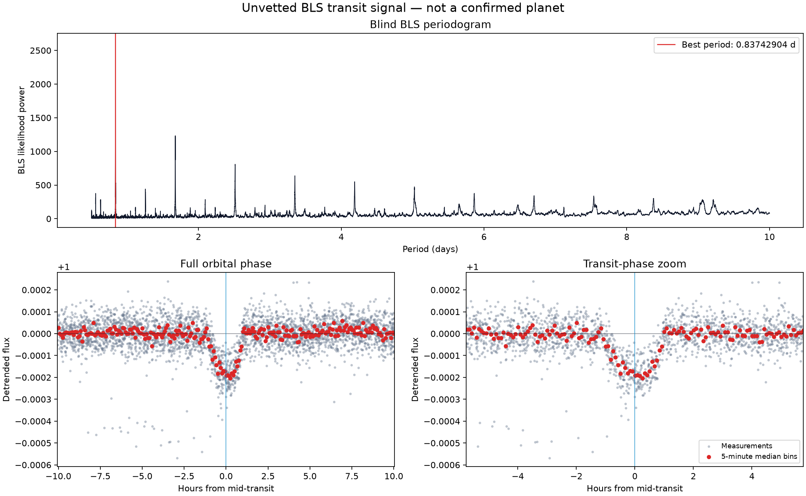
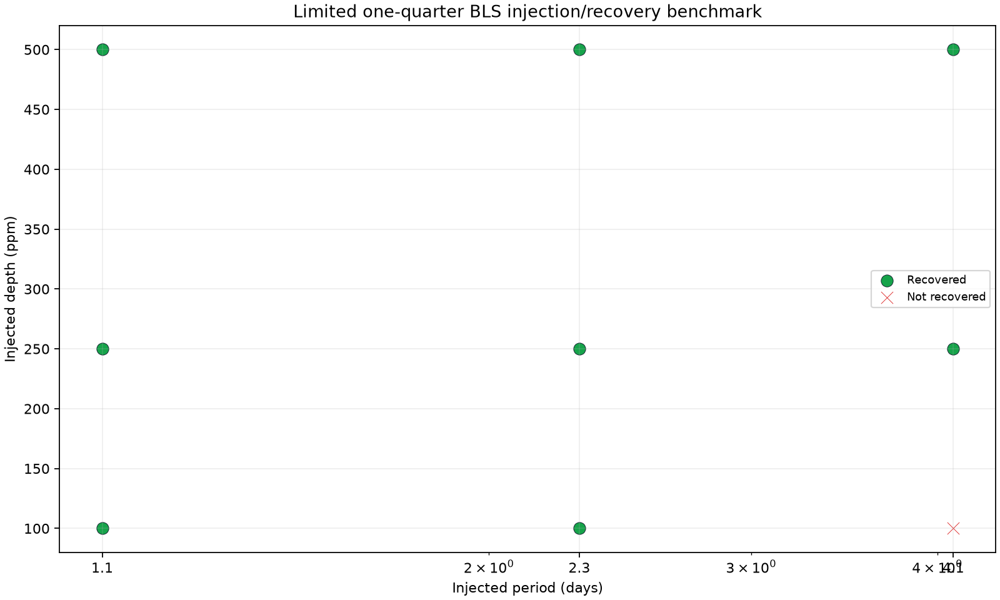

Acquire
MAST / LightkurveDownload one explicit archive product and export time, flux, uncertainty, and original quality flags with query-specific caching.
Raw provenance retainedOpen-source research software v1.0.0
A reproducible Python pipeline for blind transit-candidate searches in real Kepler light curves—from archive acquisition to screening, catalogue identification, and controlled validation.
Schematic trace · not a scientific output
Validated against a known signal—not presented as a new discovery.
Acquisition → vetting → catalogue01 / Blind recovery
TransitHunter searched Kepler Quarter 3 without supplying a published period or epoch. The strongest signal was then matched independently to Kepler-10 b / K00072.01.
KIC 11904151 · Quarter 3
MAST archive · long cadence

The figure’s “unvetted” label describes the BLS stage before subsequent screening and catalogue identification. This is a known-planet re-detection benchmark.
02 / Method
Each stage writes inspectable outputs. Negative deviations are protected—not smoothed away—and the search receives no published planetary ephemeris.
Download one explicit archive product and export time, flux, uncertainty, and original quality flags with query-specific caching.
Raw provenance retainedRetain quality-zero cadences, remove invalid measurements, median-normalize, and clip extreme positive outliers only.
594 bad-quality rows removedEstimate independent baselines across observing gaps. A fixed mask protects negative deviations from the final baseline fit.
142 points protected · 0 removedSearch 0.5–10 day periods over four trial durations, requiring at least three transits and returning the strongest periodic box signal.
Period + duration + epochMeasure individual primary events, compare odd and even depths, and inspect phase 0.5 for a possible secondary eclipse.
Screening ≠ confirmationUse the exact KIC identifier to cross-match cumulative KOI and confirmed-planet tables before describing the signal.
Known signals stay known03 / Screening
The recovered signal was catalogue-identified as Kepler-10 b, but the automated secondary check still triggered a false-positive review flag.
A marginal 7.69 ppm phase-0.5 measurement crossed the formal secondary threshold. Correlated noise and residual systematics prevent a physical classification from this check alone.
significant_secondary_eclipseBelow the 3σ screening threshold
48 measurable events
50 measurable events
Formal SNR 3.126 · flagged
Neither a passed check nor a flag independently establishes the astrophysical nature of a signal.
04 / Bounded validation
Nine deterministic box signals were injected after masking the strongest known signal. A zero-depth control tested what the search finds when nothing is injected.
trials recovered under the stated period, epoch, SNR, and control-power criteria
Residual signal at 9.07 days
Formal depth SNR 25

The missed 100 ppm, 4.1-day injection did not exceed the zero-depth control. These nine trials are not a general detection-completeness estimate.
05 / Research integrity
TransitHunter produces transit-like signals and planet candidates. Scientific interpretation remains a separate, evidence-driven process.
Archive completeness, naming, and matching tolerances matter. New discoveries require independent scrutiny and follow-up.
BLS uncertainties do not fully capture correlated stellar variability, instrumental systematics, or residual detrending structure.
The benchmark covers one target, one quarter, one implementation, and a small deterministic trial grid.
This validation demonstrates blind recovery and honest identification—not a new planetary discovery.
06 / Reproduce
Version 1.0.0 includes the complete Python package, 20 network-independent tests, validation documentation, diagnostic figures, and an end-to-end run manifest.
.\.venv\Scripts\python.exe -m transithunter.pipeline "KIC 11904151" --mission Kepler --author Kepler --cadence long --quarter 3